current project: T4T LAB 2019
project collaborators:
Prof Gabriel Esquivel,
the students of Texas A&M
project year: 2019
T4T LAB 2019 (╥|||)
Course description
Joris Putteneers: Distinguished Invited Professor.
Coordinated locally by Gabriel Esquivel working remotely with feedback from the designers’ technical challenges and intellectual charge.
As described by prolific scientist and theorist Ray Kurzweil, technological singularity is defined as a moment in human history where the human intelligence is artificially enhanced to transverse and transgressed into a form of intelligence that is not a direct consequence of natural evolutionary processes, but rather as manifest destiny, or artificial intelligence. Kurzweil defines this historic moment as a necessity that originates as an outcome of our own shortcomings to adapt into the hyperbolic growth in the speed in which collective technological progress evolves.
It is defined as an intended and designed form of human evolution cognitive and material, defined by our own lack of understanding and ability to comprehend the tools that we create for our own existence due to our stagnant and slow biological progress. Yet it is bound to become the foremost medium in which we will re-calibrate the relationship between humans, technology, culture and nature.
Such proposition has its precedent in our understanding of the self-organizing, or intelligent, properties of natural and artificial systems. Our analytical models of self-organizing, self-generating and self-evolving systems are based on the mathematical abstractions we created to translate these systems into media that we can comprehend, communicate and materialize. The objective of this course is to create a coherent architectural prototype that will act as a vehicle to fulfill a number of idealized conditions related to hierarchy, structure, program and other architectural criteria. An architectural system that can later on be tailored toward a particular context or problem, allowing the system to “self-generate” based on varying parameters.
Project Goals
The project’s objective was to direct the students towards the values of focused experimentation by manipulating tools and pipelines to their advantage, deriving an architectural prototype without limitation and classification.
The Lab explored this Blackbox algorithmic workflow, producing topological complexities that cannot be acquired with traditional toolsets. There will be specific attention to errors and glitches emerging, not due to randomness, but due to misinterpreted vector/voxel conversions and manipulations, and think of them as digital architectural artifacts, translating them into a very specific form language and aesthetic. Resulting deformities, mutations and abnormalities will be celebrated.
The lab focused on algorithms and their analytical implementation in a post digital era by embracing the unexpected. Programming, experimenting and modeling into the abyss, setting up attributes only suggesting processes.
The lab focused on iterative algorithmic methods used to understand spatial and formal relations, with a concern about manipulation, exploration and exploitation of all mediums, iterative translations between digital and material and vice versa.
The lab created systems that possesses with characteristics both natural and artificial.
ARK is a sanctuary of objects speculating on a new ecosystem of accessing, displaying processing, and preserving in a post-singular context in an endeavor to ensure that digital information of continuing value remains accessible and usable. This archive addresses algorithmic operations sectionally, in three levels: the architectural system as a whole, the curatorial process, and the object as tool in how it relates to the system. Programmatically, objects are displayed in a gallery and garden, processed within an archival chamber, and finally laid to rest within the catacombs for deep storage and preservation. This process of preservation is cyclical, allowing for a reduction of time to exist in an object’s quote unquote lifespan. The objects are not only preserved but are repurposed to be able to produce new objects, through data collection and sequencing.
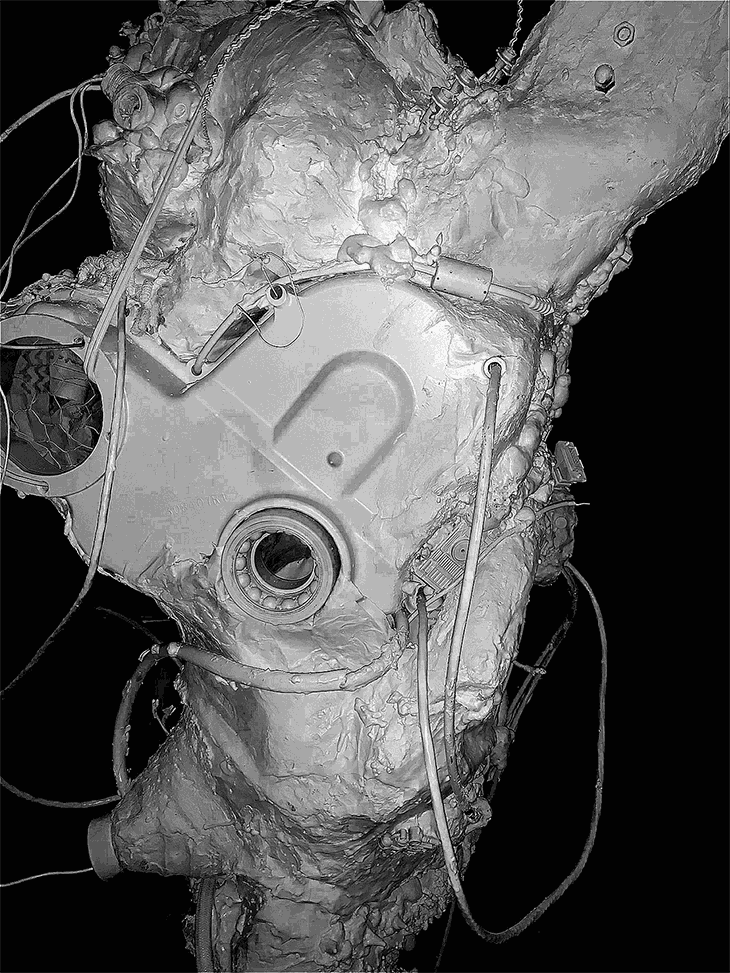
scale model A.R.K
This system utilizes algorithmic processes working at three scales:
1) The first level is the ecosystem as a whole. The gardens above ground landmarked by follies outputted by the machine determined ideals of a picturesque, rejecting Kantian perspectives of the beautiful and sublime, in order inject its own aesthetic. A gallery where an object’s “hardware” is displayed and accessed by a subject curated entirely up to the machine’s discretion.
Below the gardens, the liminal space of the archival chambers where an objects data is collected and processed in its transition to becoming digitally preserved,
and finally to storage within the catacombs where the object’s remains are stored in the “folders” within the poche. Due to the cyclical nature of this ecosystem, if objects are considered significant due to machine discretion, the object data will be outputted and sent to the gardens to be displayed or if deemed insignificant (for example: object duplicates) are then sent to the incinerator to be deleted.
2) The next level of algorithmic processing, is curation. There is a step by step process in the object’s journey from arrival to storage that takes place within the archival chamber. This process is aided by artificially intelligent tools dubbed The Curators. The Curators are charged with classifying, appraising, sorting, collecting, and interpreting object data through photogrammetric scanning, material extraction, and cataloguing for digital and physical preservation.
In the Second Digital Turn, Mario Carpo describes the new technological advancements in classification and sorting that have allowed data to be collected. Technology giants such as Google and Amazon have allowed people to correctly sort information or files in a specific order, but machines are able to do the job at a more efficient rate. From today’s big data perspective, it is easy to see that classifications also function by structuring and formalizing a random stock of information, providing speedier access to all data in an inventory by way of indexing. In Amazon Warehouses, objects are not sorted by subject or category, but only based on the frequency of scale, following an order that would be meaningless to humankind. This model of machine classification is seen within the chambers of our architecture. The Curators define their own system of classification unbeknownst to human understanding. This leads to a developed library of both meta and material data in order to create an accurate rendering of authenticated content over time.
3) At the smallest scale, the algorithm functions as a tool. A collection of objects repurposed as a difficult whole. Each “tool” is made from the “hardware” of other typologies. After a certain critical mass is outputted, when the the tool has enough information to be of use, it begins to aid in the curatorial process of the system. The result of these parts to whole is a completely new typology, the tool becomes a plane of objects through aggregation, delamination, bashing, growth, and decontextualization allowing for transtemporality of objects. The pieces are not fused or merged, retaining its own objectual qualities. The curator itself is not self sufficient, but rather becomes a product of its environment, a time capsule of collected and preserved objects. The object uses collected data to render new outcomes such as objects, spaces, and tools. The tools are no longer parts of the system but they are the system now.
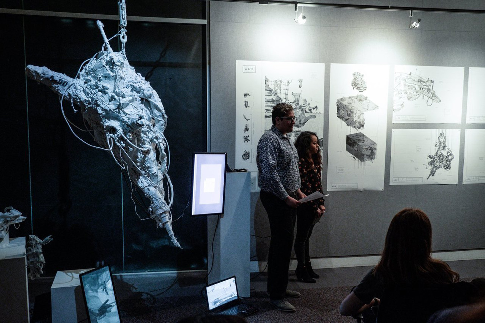
snapshot presentation A.R.K
CONCLUSION:
This project sorts in two categories. A machine’s data processing output and a human subject’s understanding of this output. While both are independent of each other, both can be used as a resource for each other in this ecology. The system learns from human data while the human may also learn from the data outputs of the system, creating a symbiotic relationship between both system and human without any interdependence. This archive produces interpretations of architecture and human and machine interaction through new means of object collection and data processing.
This project is an exploration of post-singularity and its post-anthropocentric ecology. The post-singular reality we express, exists once the machine exceeds beyond the author’s intent. By assuming that the essence of being is to create, consciousness is found when the machine begins to produce something on its own, non-human, agenda. In this case, the result is a new synthetic biological life formed through molecular reconstruction. Both organic and inorganic materials are taken from the environment and remodeled at a base level to produce new synthetic ‘biomaterials. By introducing these new materials as resources, the machine now calls for and begins to implement a new ecology that is built without cognitive human bias or agency. Ethics come into question as the security of regulating our own ecology is taken from our hands and put into the hands of a machine. This enables the transitions into the Post-Anthropocene in the sense that the machine creates a hyper-efficient ecology that is inclusive of humans, yet is not limited to agency of the small (i.e. man), but rather is focused on the agency of the whole.
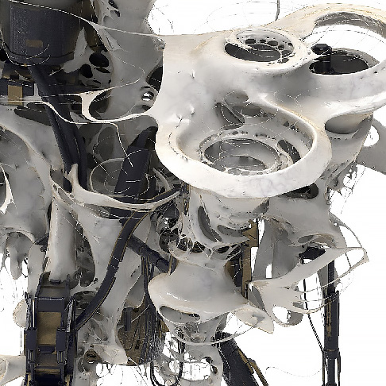
detail_01
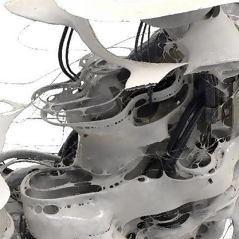
detail_02
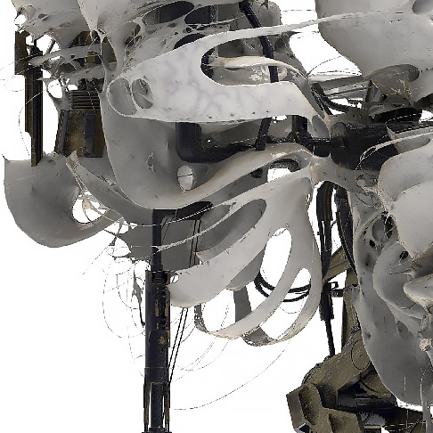
detail_03
The post-singular is expressed as moments in time where artificial intelligence takes agency beyond that of the human user, letting the machine become the user itself. In the case of this project, the object embodies the power of collective consciousness to the point of becoming autonomous and self-serving.
True post-singularity would come to exist when these systems would have full agency and independence in choosing their structure as well as producing data of its own to be input. Having a role of its own in the ecology, the post-singular machine is capable of viewing objects from a foreign, seemingly unbiased position. This reality frees itself from the Anthropocene perspective by handing off certain ecological conflict resolution to the machine. Now, the machine becomes a self-aware Mediator to the ecology, resolving conflicts in object relations.
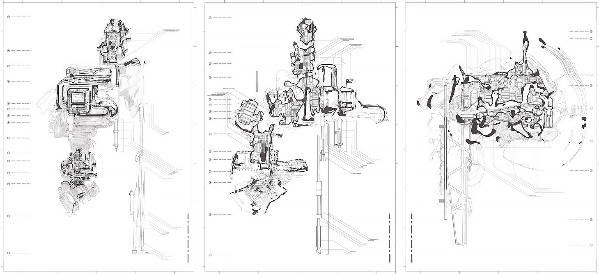
sections 1|2|3
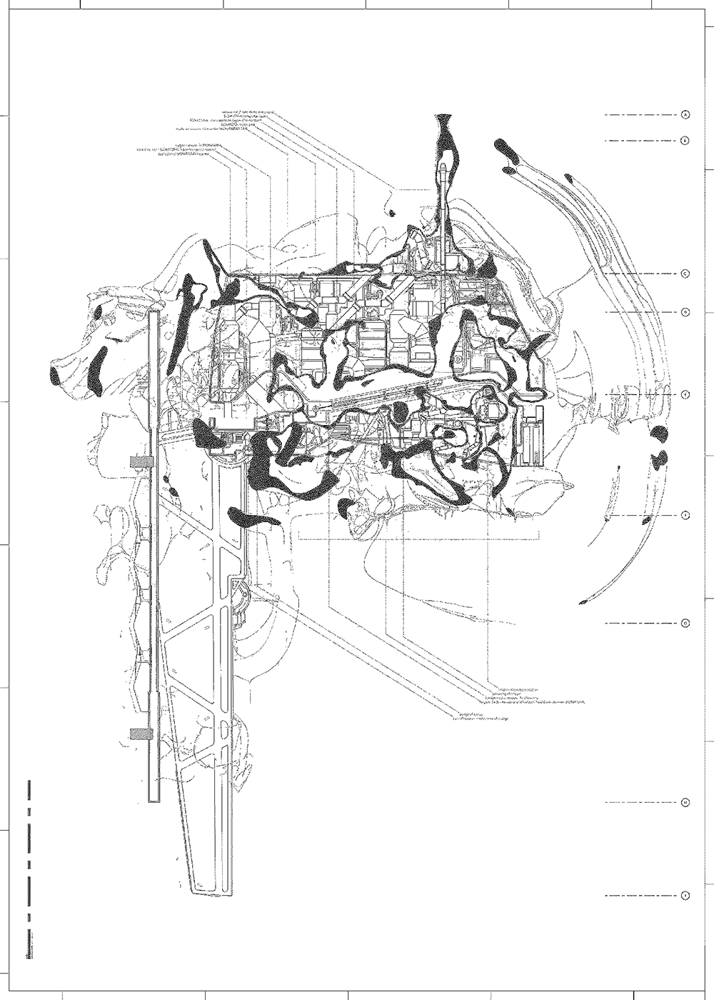
The creation and development of the objects started as part of a digital process, in which the power of artificial intelligence, through algorithms, were actively present. The program used to create its base form was set through modifications in parameters to create a specific algorithm, in a similar way to how the object is designed to create new biomaterials through reconfiguration at a molecular level from pre-existing materials. The origin of the machine was intended to be allopoietic, where its primary focus was strictly on adding and maintaining the ecology and its data. However, as the machine gains more and more awareness of itself, it transitions into being autopoietic in order to sort data and materials in ways that deem the ecology as hyper-sustainable for itself to grow. These changes in the parameters portray the unpredictability of growth and development in the digital realm, which could result in endless possibilities for the development of the object. This implies that the object could react in a number of different ways as it grows, based on the environment and the conditions that it is exposed to, allowing for a great range of adaptability to its surroundings.
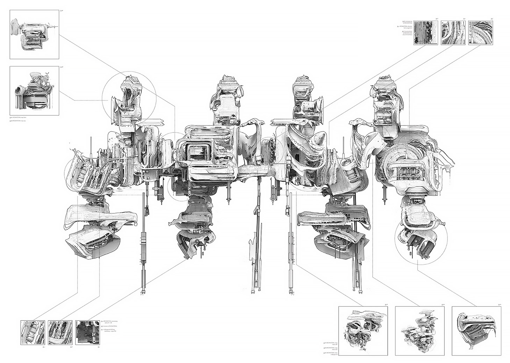
front view
Initially, the machine was intended to better the ecology for human existence by collecting defective materials of the post-Anthropocene to be molecularly reconfigured and sent back out into the environment. To do this the human gave the machine intelligence through a modified consciousness to effectively complete its task and to give it awareness of place. However, as the machine developed, it started to define its own version of a healthy ecology, making independent decisions to achieve it by utilizing its abilities to reconfigure its surroundings. The artificial intelligence overcame the limits of its own consciousness, claiming dominion over nature and developing a denial of death in the Heideggerian sense. Through this denial of mortality, the machine is unable to recognize an end, and therefore, no limit of “technological mastery.”
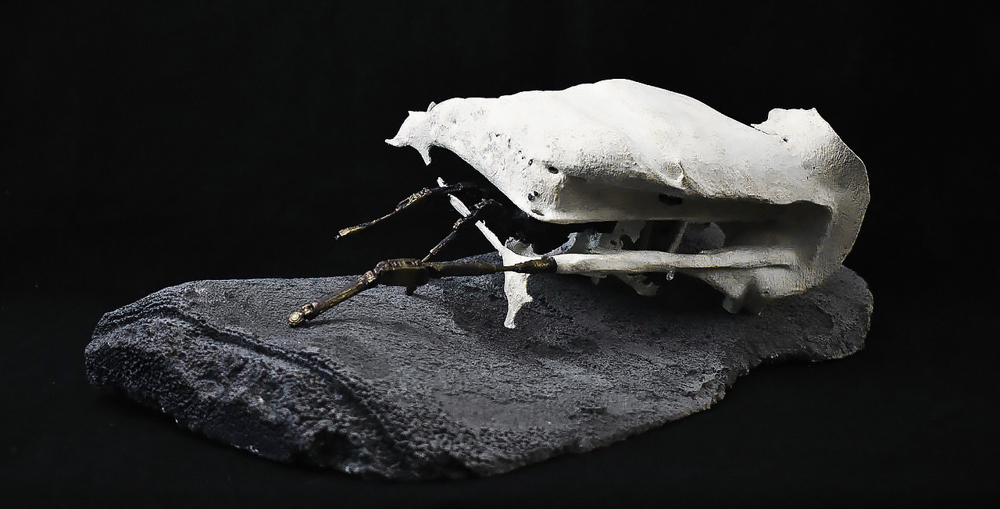
physical model 1
The process starts by the machine identifying obstacles in the environment that it must correct, in order to maintain its own idea of a healthy ecology. A healthy ecology must be maintained in order for the machine to grow and preserve itself. Once the machine defines a territory it wants to address, it supplies a minimal framework of parts to build upon in that specific territory. New iterations of drills can be created in this process. As the machine evolves in each territory, drills come together to form larger components as the machine sees necessary. Different parts perform distinct functions, fitting into each other and mature, creating a larger, complex framework. Based off of these new parts it is able to regenerate itself in infinite ways, each time responding to the territory it is addressing. For example, small drills could extract, test, and inject biomaterial into the ecology, while larger data processing facilities could mine, process, refine, and synthesize biomaterial on a large scale. In both cases, each component is made from a similar original framework, but plug into each to reach new outcomes based on their individual derived functions.
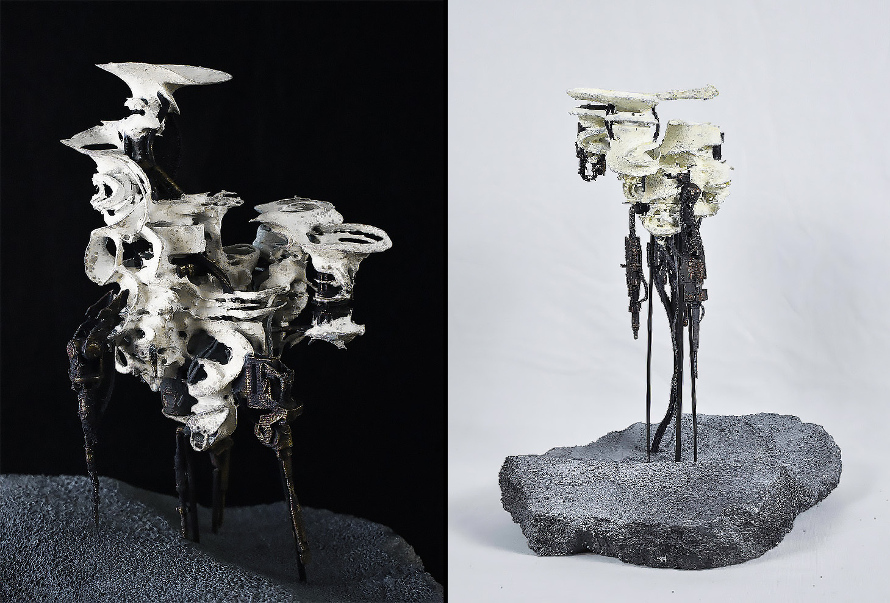
physical model 2|3
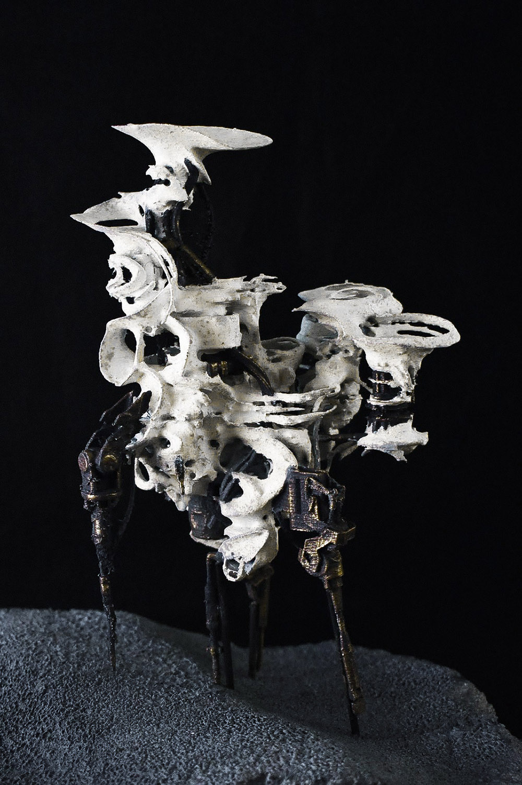
The drills are mining materials affected by the Anthropocentric age located on the top soil layers of its environment. These anthropocentric materials can be classified by the level of transformation or deterioration by human impact, be it digitally, such as bodyless data pollution, like electromagnetic rays, or physically like effects from global warming or lithium mining. These off-site drills then transport themselves back to the data processing facility, where the mined materials are refined, processed, and injected with a catalyst, breaking them down and reconstructing them on a molecular level to create a new biomaterial. The data processing facility contains a central drill that is able to extract a base material on a large scale in order to keep up with the demand for the desired biomaterial. The new biomaterial is stored separately to ferment, due to its unpredictable nature, as originally defined by the human. Once the biomaterial has matured, it is extracted by the smaller drills and ejected back into the area from which it came, thus fixing and creating a new ecology that the machine deems as suitable for itself to exist.
Counterfactuals, or discourses concerned with the alternative outcomes of situations, have been foundational to architectural discourse over the past century. They have been of particular interest in the post-modern, neo-liberal context in which movements like modernism and speculative realism have emerged from. Counterfactuals allow the architect to speculate about what society would look like if the ideals behind the discourse were unilaterally accepted. Epistemological questions asked through the lens of counterfactuals allow us to wonder how our experience can justify thought and allow us to talk about remote possibilities without the limitations of our immediate episteme.
These speculations raise very serious questions about why we accept our immediate reality and what is to be done about it. Counterfactuals hold a particular allure to architects as they blend fact and fiction, justifying any speculation as long as it purports a realist or scientific basis. The critical issue facing speculative realism is the distinction between fiction and lies. Fictions are told with the understanding that they are not truth and are intended to convey some moral, lesson, or hope. Lies are the blatant misrepresentation of reality in order to achieve some end, or convince others of the projects validity. While science and fiction are not incompatible they are not replacements for each other, thus the very subtle difference between science fiction and fiction science. This is the danger of counterfactuals, their inherent ungroundedness makes them easier to accept as truth, especially when engulfed in a fire hose of untruth and propaganda. When immersed in such fictions, all this project can be is counterfactual.
In 1944 at the Democratic national convention, incumbent vice president Henry Wallace overwhelmingly won the nomination for Vice President to Franklin D. Roosevelt for his fourth consecutive term, making him the 33rd president of the United States. Following the end of second world war following the Soviet invasion of Manchuria and Japan, Wallace and Stalin signed a treaty promising that in exchange for Soviet ownership of Alaska, both sides would denuclearize and instead spend research funds on public interests such as humanitarian crises and materials and architecture research. The groundbreaking development of self replicating and repairing material allowed for the construction of large infrastructural and public works projects such as high speed trans-continental railroads, public housing, and immigration centers. The potential prosperity flaunted by the proponents of these innovations never came.
The miracle technologies were quickly co-opted by corporate powers and used to produce larger and more monotony. The wealth and prosperity promised by the efficiency of these new technologies was swallowed up by those with the capitol to utilize them and the wealth gap spiraled to record levels giving rise to a populist movement. The Henry A. Wallace Immigration Center was one of the first and only unique architectural expressions to come out of the “Architectural Revolution.” It was constructed in 1965 and served for 54 years before the rising populist movement condemned the flow of migrants into the United States from the northern border and the center was deemed a threat to national security.
//When they set up the fire hose of falsehood they are asserting that they are not constrained by reality
// There is nothing so humiliating and degrading as trying to prove the truth
// The goal is to rob facts and reality of their power
// It’s the stories we tell about facts (or counter facts) that influence people
// “Truth isn’t truth”
// Facts and objective reality don’t matter to people, interpretation does
// Don’t tell open ended stories, they can be distorted to mean whatever someone wants
// Speculative realism is in a particularly vulnerable position in that its disregard for reality leaves it open to being co-opted by those who might use it for unsavory purposes.
// The critical issue is between lies and fictions, fictions have morals and are not intended as replacements for reality, lies are intended to be believed as reality.
// Lying that things are based in science and presenting them as engineered, scientific solutions is dangerous to the profession and the discourse.
As Timothy Morton asserts, “the fantasy we have regarding trash lies in that it disappears [and] dissolves.” In the United States alone, humans are generating trash at a rate of 4.6 pounds per day per person, which translates to 251 million tons per year. As a result, greenhouse gas production is increasing and studies indicate that the earth will become uninhabitable for human life by the year 2060. Hundreds of species rely on organic waste produced by human activity for survival. This raises the question of how an ecosystem dependent on the production of human waste, such as the garbage dump can survive without humans available to generate input?
detail 1|2
This machine uses big data collected from digital waste and physical waste in order to optimize dump emissions with the intent of sustaining both the earth and the ecology of the rubbish dump, privileging the dumps’ agenda to preserve itself in the case of human extinction through a process of machine learning and synthetic trash manufacturing.
detail 3
Occupying the territory of the dump, the self-generating structure operates cyclically, fluctuating, expanding, and contracting over time as more garbage accumulates and system optimization occurs. The cycle begins with the insertion of an algorithmic primitive that collects, learns, and expands until it begins phases of consolidation and optimization. The cycle begins again as the machine updates and refines its understanding of the dump.
The machine determines the desired composition and form for optimized trash based on a gained understanding of the chemical composition of trash required for a positive impact on the ecosystem. The physical collection mechanism is interested in collecting samples of organic material and in rescuing lost data found in e-waste material such as computers, hard drives, mobile devices, etc. The machine combines on-site collection and observation techniques with its access to digital waste found in the cloud to better process garbage input.
Although the preservation of human life is not the machine’s intent, the machine’s ability to produce optimized waste that could fertilize soil, purify water, or counter the effects of carbon emissions could potentially postpone human extinction. Human extinction or not, the machine is primarily concerned with self-preservation through optimized synthetic trash manufacturing.
physical model close-up 1
physical model close-up 2
physical model close-up 3
The machine is not pushing any aesthetic agenda. The machine derives its aesthetic regime from its own assimilation of how the machine becomes a part of its ecology, acquires big data, and produces as needed. It establishes a completely new aesthetic regime based on the algorithm big data allowed it to produce, but it is not assimilating any known aesthetic. The media exhibited in the presentation represents our speculation on the qualities of the machine’s aesthetic at all scales; large, in elevation and plan, smaller in interior and exterior machine detailing. The smallest scale of speculation can be observed in our photography and film studies.
This new ontology of cyber crimes is resolved through the progression within the prison from admittance to reintegration to society. This process is expedited where information gained through big data is synthesized into virtual reality in a post-human level of efficiency. A prisoner must pass through a series of chambers and experience parts of the simulations taking place in them before arriving at their own customized VR simulation. Because of the nature of VR, the prisoner would feel as though they have been incarcerated for a long period of time, when in reality, only a few hours have passed. This is further discussed by Foucault’s analysis that the current prison system has begun to transfer from the punishment of the body into one that is centered on the punishment of the mind and the intent to commit crime. In each simulation, the prisoner is unaware that their environment is not real. The simulation corresponds to the crime committed, as a way for the convict to realize the severity of their actions. The punishment acts as rehabilitation in a new application of neuroplasticity in which the minds of both humans and AI are rewired to break the connections of criminal behavior and instead reinforce “proper” avenues of thought. This is completed through the VR simulation where PTSD is prevented by forcing the prisoners to confront these traumas.
section drawing
This project speculates on a prison in the post-singularity era. The prison is occupied by both humans and AI who have committed cyber crimes, and is governed by a council from both species. As a prisoner is admitted to this center, they are interviewed and assessed based on the severity of their crimes and their initial degree of contrition. Once this information has been obtained, they are sent to a specific chamber of the prison and exposed to a customized VR simulation. This reflects Foucault’s assertion within Discipline and Punish, in which the prison begins to operate in the same typology of the factory or school where one is subjected to the normalizing gaze.In creating this new prison typology, we are reinterpreting Foucault’s anthropocentric basis to fit the conditions of a post-singularity and post-anthropocentric society where the effects reach both human and AI.
This model is based in cities and can be implemented in multiple locations throughout the world as needed. Each model will be tethered to the city but floating above it, and thus acts as both a panopticon and a reflection of crime rates within the city. The wires that tether the object act as data collection structures and can grow and stretch as needed to better absorb information from points throughout the city. The physicality of these tethers is based on the psychological phenomenon known as the Hawthorne effect in which individuals modify an aspect of their behavior in response to their awareness of being observed. The algorithm acts not only as habitable space to define each chamber, but also as a signal jammer to block unauthorized communications from entering or leaving the center. Because of the algorithm’s computational nature, its form fluctuates based on the density of prisoners within.
physical model
The aesthetic agency is realized through an interpretation of ornament through VR generation. This is articulated through the appearance of sculpted surfaces organized into a hierarchy of elements read as a continuous whole. This ornamental evolution follows a grotesque interpretation in which fear and awe are intertwined through the asymmetrical expression of over-exaggerated repetitive elements. In this manner, the influx of crime data gathered from the city generates further ornamentation. This ornamentation shifts past notions of baroque and rococo and begins to define its own style, moving forward operating in the post-anthropocene. These concepts are represented through the form of a narrative collage in which the progression through the experience of the prison is displayed in a digital reinterpretation of the collage. The collaged images become something else—a new form that is neither representative of nor derivative of the original architecture that seeks to further dilute reality.
The process of designing the prison is critical to the understanding of its operation as we move past the epistemological and move into the ontological. We have moved past the idea of “becoming digital” with design operations being performed in the real world using analog methods, concepts, and tools such as the mouse. Now we function completely digitally in the VR simulation where we are pulling from digital information and generating form through a post-process method of sculpting that operates outside of the bounds of physical and human limitations. In this way, the prison is created and exists within a new reality that doesn’t acknowledge its own existence as being digital. This demonstrates the effectiveness of VR as a new methodology for the generation of both form and concept, existing simultaneously.
detail 1|2|3
This produces a program that blurs the lines between reality and simulation through strategies of manipulation of time and space in an effort to change societal perceptions of the purpose of prisons. This progresses past Foucault’s analysis of the treatment of prisoners and the effects of their separation from society by providing a solution in the form of a post-heterotopic existence: an in-between space that acts as a way to not to only alter an individual criminal, but as a way to repurpose the influence of the prison on society.
In Quentin Meillasoux essay “After finitude: An Essay on the Necessity of Contingency” he introduces the notion of ancestrality upon objects and its alienation to human comprehension. In his essay he examines the concept of this ancestrality of existing in a non-anthropocentric world. Submerged topology exists within the “what-if” a pure narrative speculating of how objects may exist, have existed and their relation to its counterpart: artificial intelligence long distanced from its human trace.
The object in this project exists in a post-anthropocentric world where human have ceased to exist, and the next generation has led to development and evolution of AI. In its quest for knowledge and exploration the AI has traveled to remote areas where no information and data has been extracted, thus an AI in its quest for self learning. Upon reaching the bottom of the ocean, an area no man had ever explored the AI is able to acquire new visual data and add content to its library. This place is where the object exists and has existed, no prior information of an object of this scale leads the AI to assume that humans inability to find it has made it thrive and grow without human corruption throughout millennia, as far as the AI knows its point of origin in time is inaccessible but assumed to be millennia old. As Meillasoux would have place it, the object becomes a supra-ancestral object and thus have to be analyzed in universal terms not correlating to man-made ontology. In this case its textural qualities are represented through the machines first encounter with the object.
detail 1
detail 2
detail 3
detail 4
detail 5
detail 6
In a way to understand how the supra-ancestral object came to be, in its form, and its growth, the AI analyzes the figure in relation to its surroundings in this case the benthic layer of the ocean. In this environment, forms such as hydrothermal vents and the object itself are affected by the abundance minerals and smoke seeping from the fissures of the oceanic crust.
physical model detail 1|2
Therefore the AI interprets the object as itself through an analysis of possible growth algorithms due to the influencing factor of its harsh environment. Encoding the object itself is a series of representation separated from what the normal eye can see, in this type of representation “Machine Vision” the AI can take note and account for pressure , mineral deposits and laminate the image of the object in both infra-red, solid continuity, sectional analysis, and color spectrum. This is a very typical rendering and viewing technique of how we see depth passes and machines are able to laminate a single image and overlay passes of different qualities upon it. In the case of the elevation, the light is able to uncover the many different passes the AI sees upon examining the object and thus reveal the section and its air pockets. As the AI reflects upon the objects origin characteristics such as the objects layers and its thickness are observed to be direct responses to the environment. Through these visual observations of the environment and the newly discovered object there comes a better understanding of the objects ontology and therefore opens up new possibilities of data & discovery.
Much like the image layering of the elevation/section, the sound heard in the short film is an analysis of the machines collection of data through multiple spectrums. Audio cracking and disparate snaps represent the AI viewer interpreting or analyzing pieces of the object, much like lidar sensors in autonomous cars view its surroundings through laser location, and 3d scans objects on real time. In this case different layers of lamination and complexity are manifested in varied layers of audition. Reads with sound (slow pulses of LF noise) and results a crackling sound after analysis. The spotlights in the video and drawings allow us, the human viewers, to see - but it’s really only a sliver of the what the machine views. AI would see in wavelengths of light invisible to human perception and in other methods outside of the human intelligence. This audio/visual data accumulation by the exploring AI is its attempt to gain an understanding of an object that is similar.
Our project is discussed in terms of simulation software and algorithmic processing of interpretations of object as data across several contextual territories. The fluctuation and ability to transcend across a series of mediums: raw, cooked, and synthetic, is the Queer Object.
The queer object references contextual territory through a series of pointing but never defining through the Derridean notion of indifference. The algorithm interfacing within itself, shows the notion of indifference, moments where the algorithm does not necessarily decide what to do but rather just does. The algorithm works the same way in establishing its understanding through a series of interfacing with contextual objects
The first relationship is territorial, this is an epistemological quest by looking for, pointing at, through the notion of artifacting across the raw, cooked, and synthetic. The algorithm operates as the smooth territory itself, where the contextual territory operates as the vehicle for striation. The algorithm is not bound to a territory but places itself through a series of referential objects that are able to be artifacted from the contextual territory.
The algorithm can exist in all forms of territory because it is always pointing at but never actually defines these moments. The territory is defined the moment the context is referenced and artifacted.
The act of indifference and vicarious causation of referenced objects results in the contextual territory to become the vehicle of striation.
physical model detail 1|2
physical model detail 1|2
physical model detail 1|2
Raw, Cooked, Synthetic
Each territory represents the nature of the Raw, Cooked, and Synthetic. The artifacts from each territory are results of incomplete understandings of contextual objects due to indifference.
The Raw is a proto territory that yields an ancestral algorithm. The artifacting process, since the algorithm interprets numerical data, consist of a series of photogrammetry of objects found within the proto environment, that are then translated into a cartesian coordinate system. The data was then ran through the scripting of the algorithm itself to be in its own image.
The Cooked is a territory that contains a series of objects created by CAD. This denotes ideas of construction, technicality, and complete control of Euclidean geometry. These objects are easier for the algorithm to synthesize because of the similar language of numerical data, thus causing an overlap in data and resulting in the kit bashing of referenced objects. The data was then run through the algorithm to put it into its own image.
The Synthetic is a hyper real territory. The hyper real is a system of software simulation simulating itself. This territory only exists within the digital environment. The objects that exist within this territory are produced digitally and are only meant to act in the digital realm. The artifacts created, since the algorithm does not care to observe every data point of the object, are the results of the jumbling of data points and creation of simulated simulation. The hyperreality is the terminal stage of simulation.
Maturity & Queerness
Since the algorithm is in a constant state of flux, both in posture and territoriality, maturity and senescence can be derived. The duration allows for the algorithm to continue the addition of artifacts.
iterations
Due to the constant act of referenced objects and striation of the algorithm through such, the queerness emerges. The position of queerness can be seen in the vector density drawing, section cuts and geometrical resolution. As the algorithm continues its maturation, the flux can be seen in a change of density of the framework of the vector trails. The vector trails are the foundation of the generative nature in the workflow project, as the overlap of trails unravel, the substance that can be territorialized by the artifacts is depleted.
The resolution of the geometrical framework is also at the will of the maturation of the algorithm. Areas can now be identified through resolution of artifact versus algorithm other than just in terms of geometrical relations but rather geometrical resolution and subdivision.
The flux of artifacts begins to divide and disassemble the area in which the algorithm can operate. The addition of these artifacts creates new spaces while divides others. Through the senescence of the algorithm and addition of artifacts, the posture of the algorithm changes as it matures. Upon referencing the contextual territory under constant acts of striation the queer object is exhausted. The duration of the algorithm can be seen through the decay and dismemberment of the original algorithm and growth of invasive artifacts. The duration does not compromise the substance of the object because it is an issue of kind and not to degree at which the posture is lost.
Simulation
The algorithm does not need to exist in our current reality, rather we are laying the frame work for the next reality in which this will occupy, the architecture of the hyperreal, because what is the difference from the architecture of the a priori world of our reality.
The Hyperreal is the terminal stage of the simulation, because the hyper real is indistinguishable from reality, and thus the process is repeated from the raw to the cooked to the synthetic, recursively.
digital model -front view
Conclusion
The algorithmic exhaustion, theory, and queerness are all connected through the results of simulation software. The essence of simulation is queer. The aspects of flux that are produced in terms of fluidity change and indefinability relates exactly back to queer theory.
presentation snapshot
The workflow of this project showcases the view of machine vision and simulation software being applied to all principles of territory, section, elevation, program and aesthetics. They are all adaptive to different Variables that can alter both the simulation program and the algorithm which ultimately leads to the absolute exhaustion of workflow ending the life of the queer object and simulation.